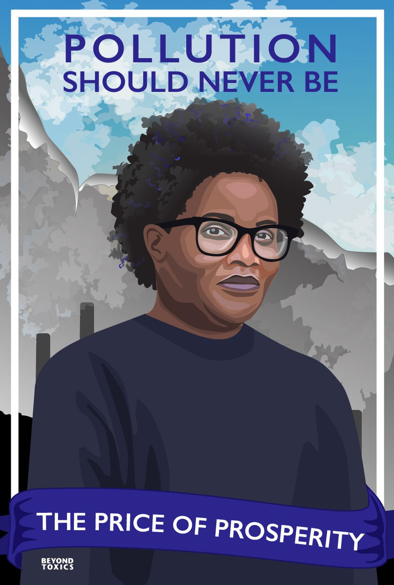
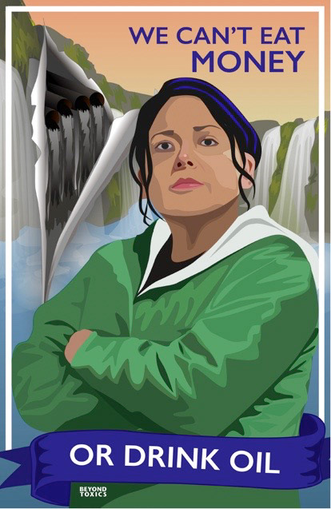
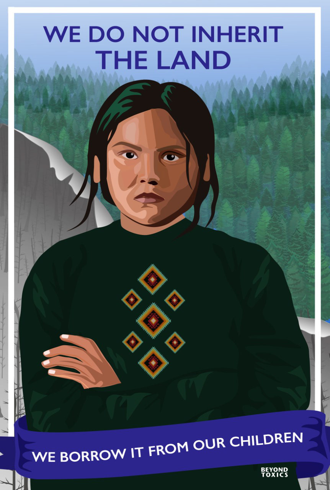
I illustrated this series of three portraits as a counter to greenwashing advertising. These portraits represent members of vulnerable communities impacted by climate change that Beyond Toxics works with and advocates for. Behind each figure is the reality of pollution ripping through what was once beautiful nature. I included quotes I found that best expressed the call-to-action to protect our planet. They serve to remind viewers everywhere of each person's individual responsibility to make decisions that help protect our planet from further damage.
Checkout the creative process below
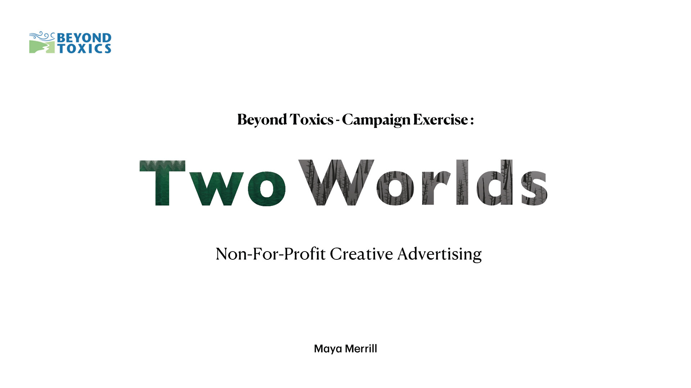
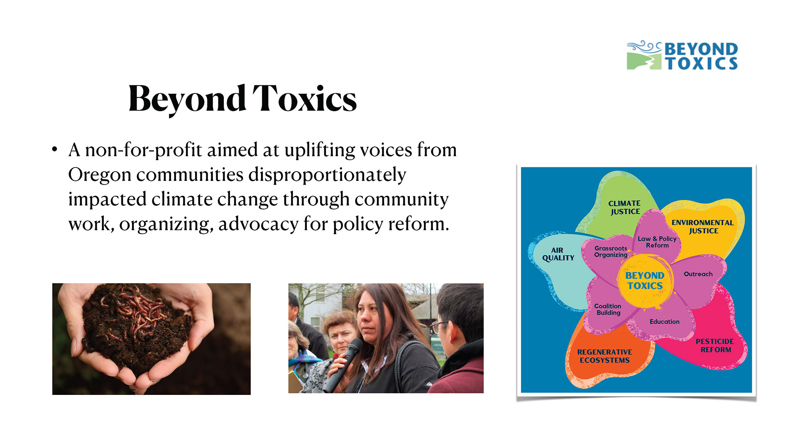
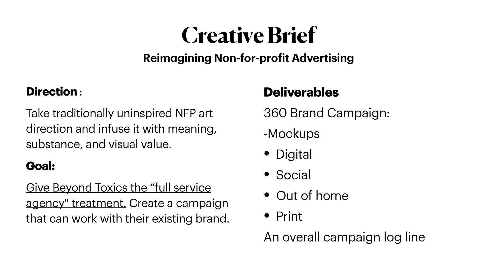
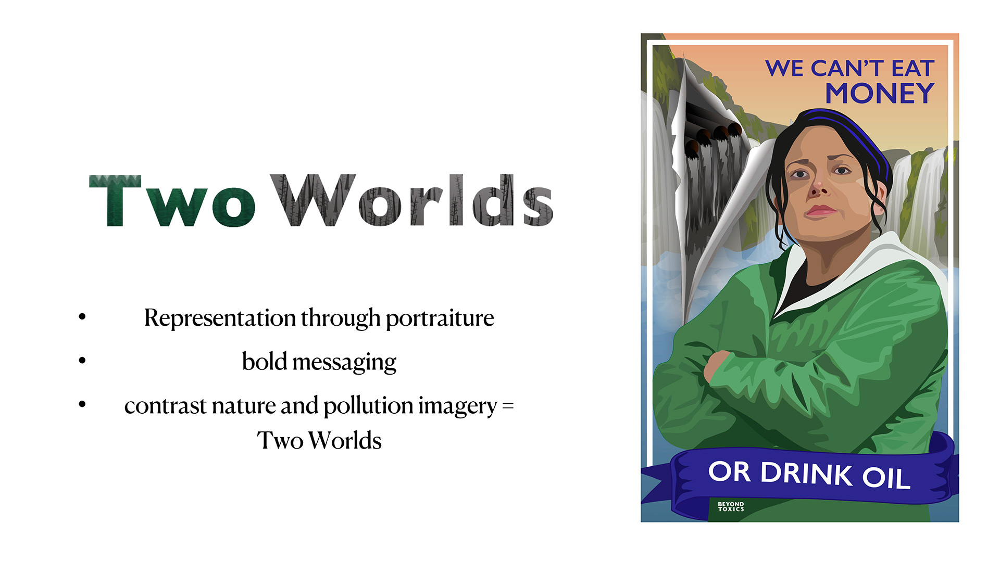
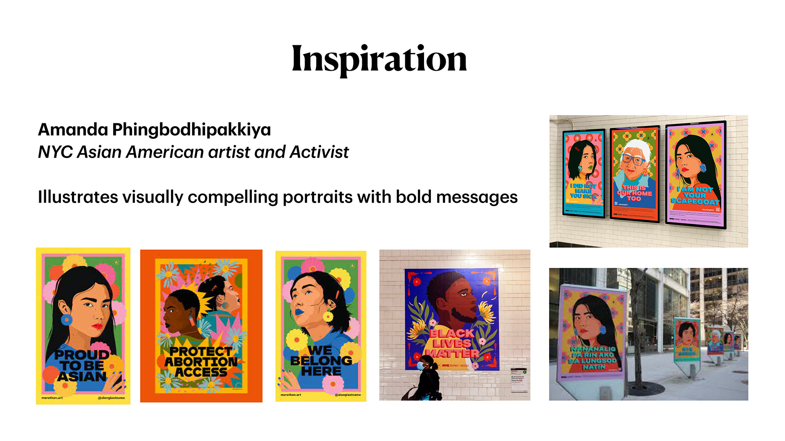
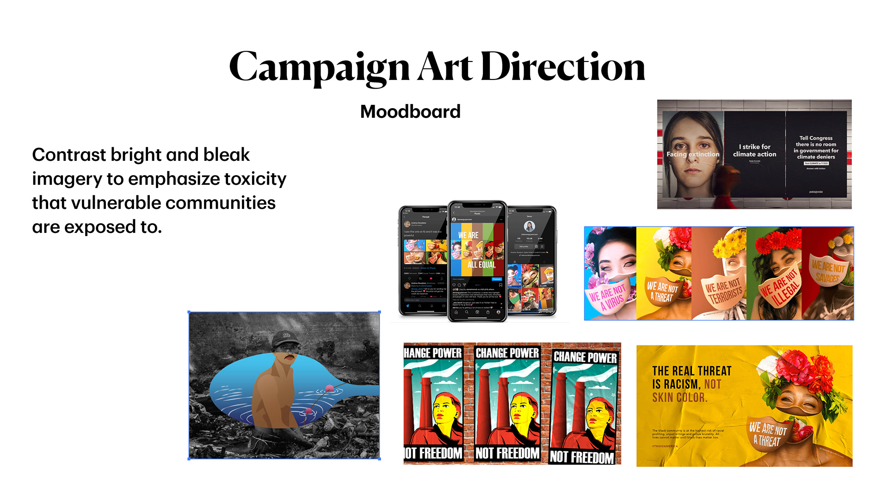
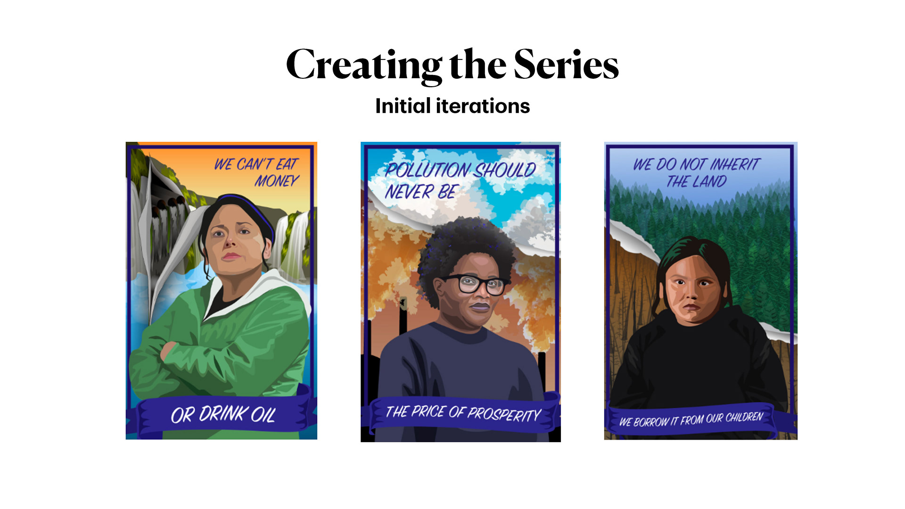
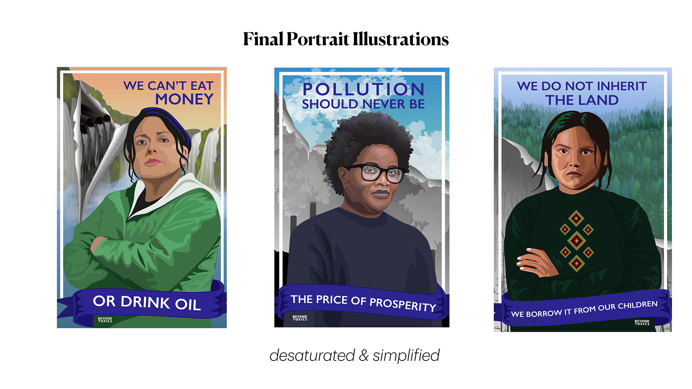
Campaign Executions
The 'Two Worlds' campaign would appear in public settings, in printed material and on digital platforms to maximize visibility.

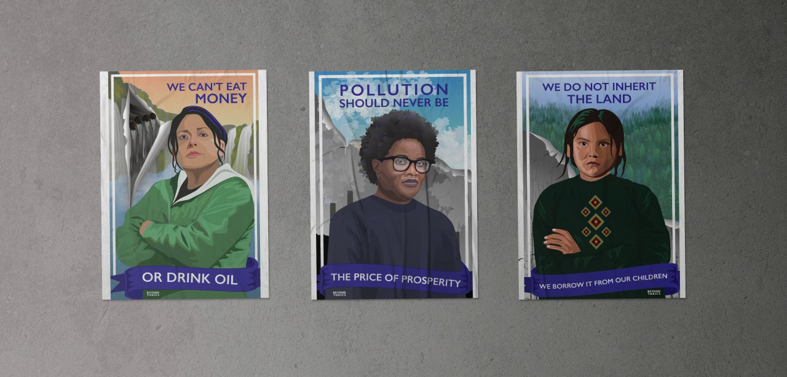
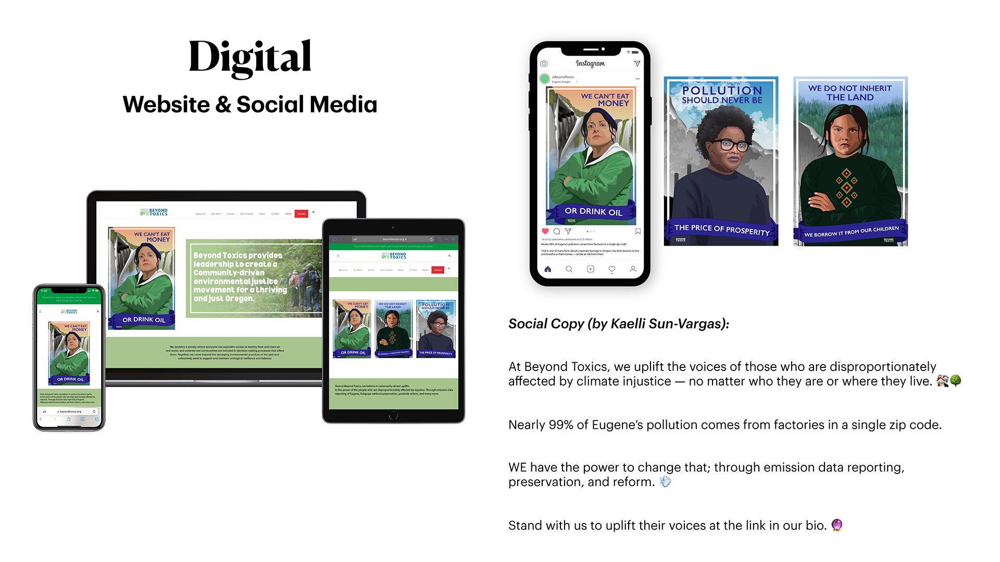